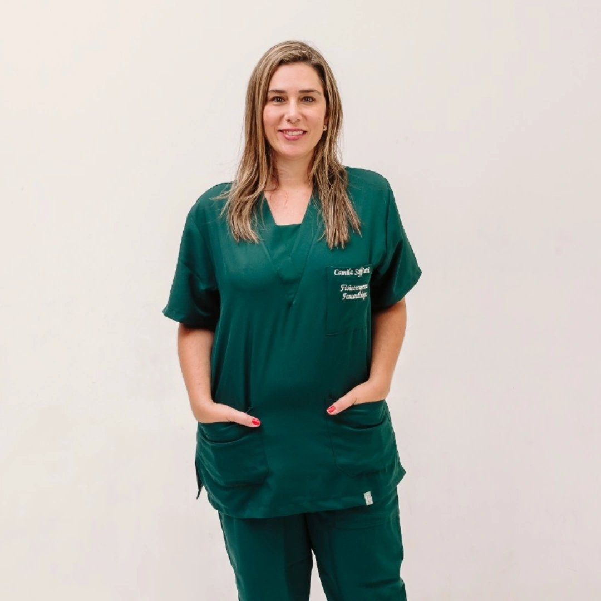

Recupere sua qualidade de vida com atendimento domiciliar especializado e acolhimento humano.
Fisioterapia e fonoaudiologia de alto padrão sem você precisar sair de casa. Cuidado personalizado focado em resultados reais.

Nossa Expertise
Atendimento Domiciliar Especializado
Leve a clínica para dentro do seu lar com soluções avançadas para restauração das funções vitais e do seu bem-estar.
DTM
Tratamento especializado para disfunções temporomandibulares e alívio de dores orofaciais crônicas.
Disfagia
Reabilitação segura da deglutição para pacientes com dificuldades alimentares e distúrbios motores.
Paralisia Facial
Protocolos modernos para recuperação da mímica facial e funcionalidade estética e motora.
Neurológica
Cuidado focado em AVC e Parkinson para devolver autonomia, mobilidade e independência.


Trajetória e Dedicação
Dra. Camila Soffiatti: Expertise e Cuidado no Seu Lar
Com formação sólida e anos de experiência, Dra. Camila une o rigor científico ao conforto do atendimento domiciliar. Sua missão é transformar vidas através de um plano terapêutico exclusivo, realizado onde você se sente mais seguro.
- verified Referência em Fisioterapia Orofacial e Fonoaudiologia Domiciliar.
- verified Especialista em distúrbios neurológicos complexos.
- verified Foco constante em atualização científica e novas tecnologias.
Viver sem dor é possível
Não deixe que o desconforto limite sua rotina ou tire sua liberdade. Recupere suas funções vitais com um método que respeita o seu tempo e o seu corpo.
Personalização
Protocolos únicos desenhados especificamente para o seu histórico e objetivos de recuperação.
Inovação
Uso das técnicas mais avançadas do mercado, com base em evidências científicas sólidas.
Resultados
Foco no restabelecimento funcional para que você possa voltar a fazer o que ama sem restrições.
O que dizem nossos pacientes
Histórias reais de superação e bem-estar.
"A Dra. Camila mudou minha perspectiva sobre o tratamento da DTM. Após anos de dor, finalmente encontrei alívio e um atendimento humano e técnico impecável."

Ana Paula S.
Paciente de DTM
"A recuperação do meu pai após o AVC foi incrível. O profissionalismo da equipe em neurologia devolveu a ele a autonomia que achávamos perdida."

Ricardo Mendes
Fisioterapia Neurológica
"Tratamento de paralisia facial de excelência. Em poucas semanas os resultados foram visíveis e minha autoestima voltou junto com os movimentos."

Juliana Costa
Paralisia Facial